GREEN-API MAX Chat — пошаговое руководство
Веб-клиент для отправки и приёма текстовых сообщений в мессенджере MAX через GREEN-API. Тестовое задание (frontend) для компании «Грин-Апи».
1101000001 для idInstance и YOUR_API_TOKEN для apiTokenInstance. Никогда не публикуйте реальные токены в репозитории, issue или скриншотах.1Что это за приложение и что оно умеет
Небольшое SPA на React + TypeScript (Vite). Интерфейс в стиле web.max.ru: список чатов слева, переписка с «пузырями» справа. Все запросы идут в HTTP API GREEN-API по схеме {apiUrl}/waInstance{idInstance}/{method}/{apiTokenInstance}.
- Вход по ключам инстанса (
idInstance,apiTokenInstance,apiUrl) с проверкойgetStateInstance. - Экран авторизации инстанса MAX по QR-коду (+ ввод пароля 2FA через
sendAuthorizationPassword). - Режим «Партнёр» (Partner API): список инстансов, создание и удаление инстанса.
- Создание чата по номеру телефона или chatId, отправка текста (
sendMessage). - Приём входящих текстовых сообщений опросом очереди
receiveNotification/deleteNotification. - Состояния ошибок: неверные ключи, неавторизованный инстанс, сеть/CORS, повтор неотправленного сообщения.
- Адаптивная вёрстка (мобильный список и чат), демо-режим без инстанса (
?demo=…).
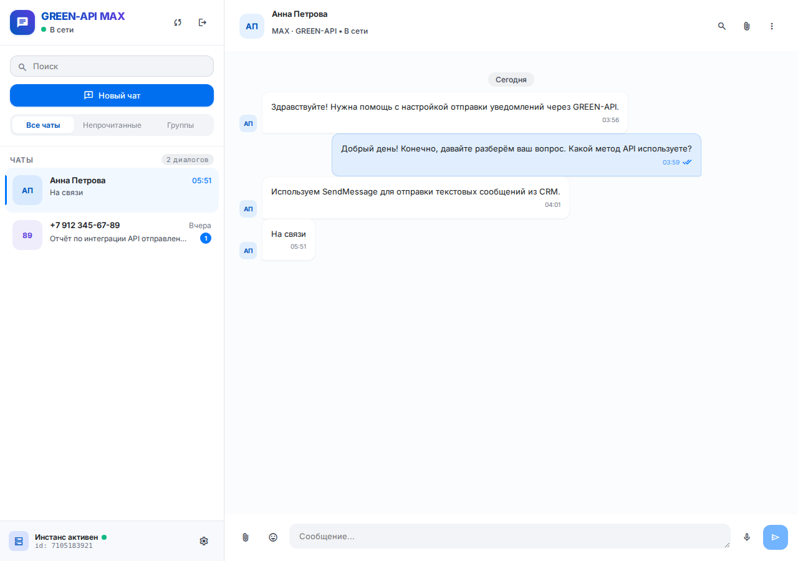
?demo=active).2Создание инстанса MAX в консоли GREEN-API
- Зарегистрируйтесь или войдите в личный кабинет console.green-api.com. Публичного API для регистрации конечного пользователя нет — только через сайт (в приложении это поясняет экран «Регистрация»).
- Нажмите «Создать инстанс» и выберите мессенджер MAX.
- Выберите тариф. Бесплатный инстанс Developer подходит для проверки, но может работать с ограничениями (лимиты на количество запросов/чатов).
- Откройте карточку инстанса и скопируйте три значения:
Поле Пример (заглушка) Где используется idInstance1101000001Поле «idInstance» на экране входа apiUrlhttps://1101.api.green-api.comПоле «API URL» (по умолчанию https://api.green-api.com)apiTokenInstanceYOUR_API_TOKENПоле «apiTokenInstance» - Для приёма сообщений в настройках инстанса очистите webhookUrl (если задан свой webhook, очередь HTTP API недоступна) и включите уведомления о входящих сообщениях.
apiTokenInstance попал в git, чат, лог CI или скриншот — сразу перевыпустите (rotate) токен в карточке инстанса в консоли и обновите его в cypress.env.json и секретах GitHub.Альтернатива: создание через Partner API
Если у вас есть ключ партнёра (partnerToken вида gac.…, выдаётся через support@green-api.com), инстанс можно создать прямо в приложении (режим «Партнёр», см. шаг 6). Параметра «только MAX» в createInstance в документации нет — тип инстанса определяется на стороне GREEN-API.
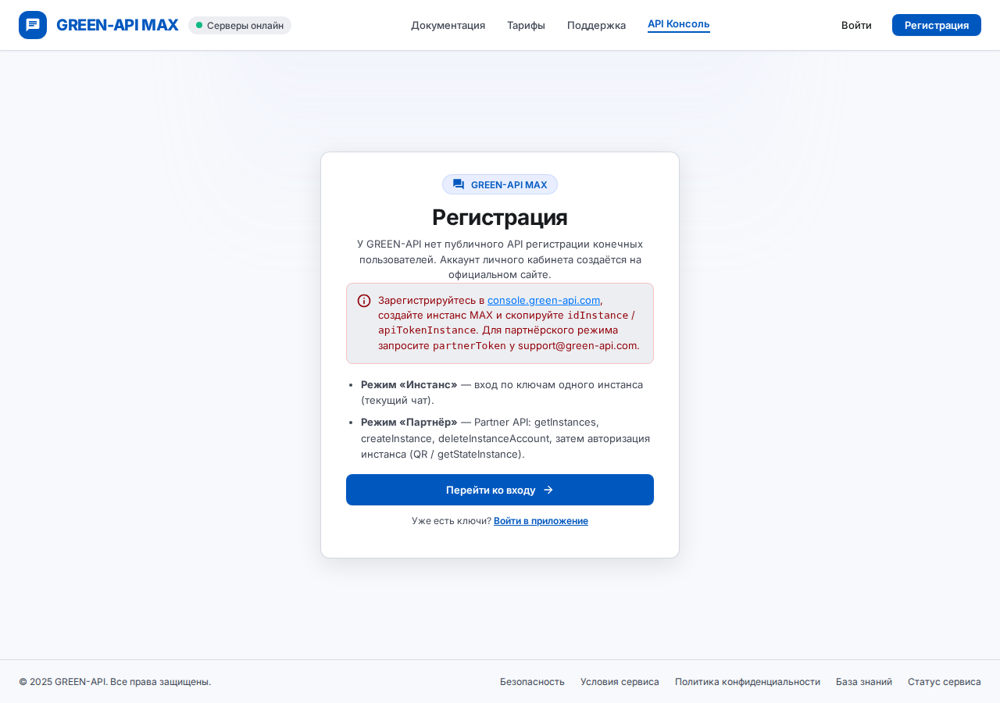
?demo=register).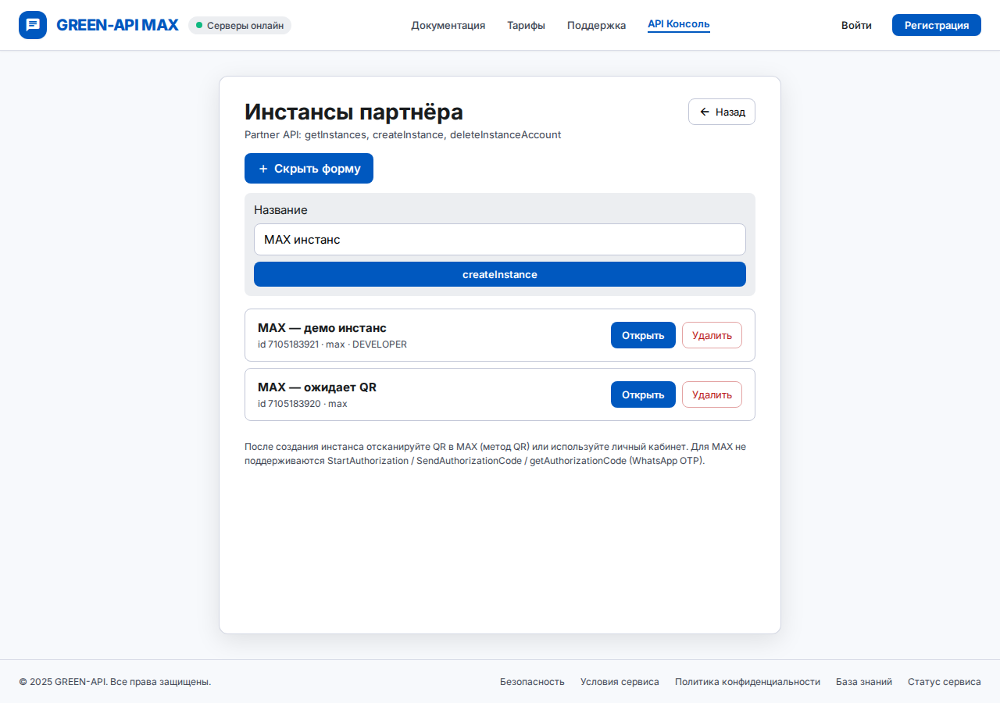
?demo=create-instance).3Авторизация инстанса по QR-коду
Новый инстанс находится в состоянии notAuthorized. Его нужно привязать к аккаунту MAX.
- Вариант А — в приложении. Войдите с ключами инстанса (шаг 6). Если
getStateInstanceвернётnotAuthorizedилиstarting, откроется экран «Авторизация инстанса MAX» с QR-кодом (методqr). QR обновляется каждые 5 с, состояние опрашивается каждые 3 с. Есть ссылка «Открыть qr.green-api.com». - Вариант Б — в консоли. Откройте карточку инстанса на console.green-api.com и отсканируйте QR там.
- В мобильном приложении MAX откройте сканер QR (раздел подключения устройств) и отсканируйте код.
- Если на аккаунте включена двухфакторная защита, состояние станет
pendingPassword— введите пароль в поле «Пароль 2FA MAX» (методsendAuthorizationPassword). - Дождитесь статуса «Авторизован» (
authorized) — приложение само перейдёт к чатам.
getAuthorizationCode / вход по коду из SMS для MAX не поддерживаются — только QR (+ 2FA-пароль). Состояние blocked отображается как «Аккаунт MAX заблокирован».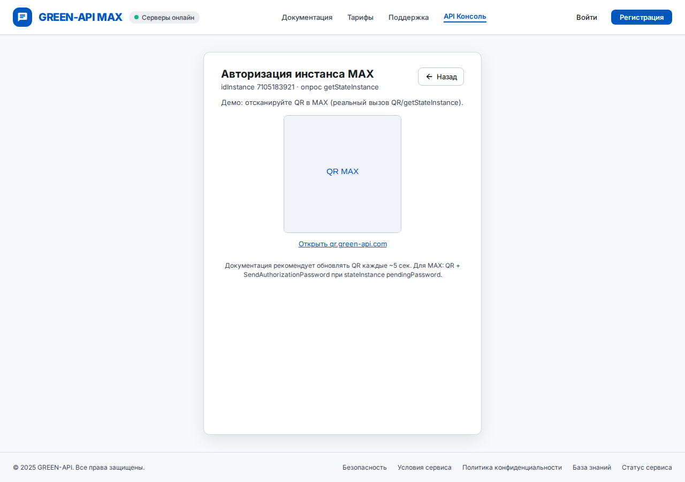
?demo=instance-qr).4Локальный запуск
Требования
- Node.js: файла
.nvmrcи поляenginesвpackage.jsonнет. CI и Dockerfile используют Node 20; Vite 8 требует^20.19или>=22.12, а Vitest 5 и Cypress 16 в своихenginesзаявляют Node 22+. Рекомендуется Node 22 LTS (минимум 20.19). - npm (идёт с Node), git. Для шага 5 — Docker с Compose.
Установка и запуск
git clone https://github.com/AiStockSearch/green-api-max-chat.git
cd green-api-max-chat
npm ci
npm run devDev-сервер стартует на http://127.0.0.1:43123 (порт задан в vite.config.ts).
Демо-режим без инстанса
Откройте http://127.0.0.1:43123/?demo=active — интерфейс заполнится демо-чатами, реальные запросы к API не нужны. То же самое онлайн, без установки: aistocksearch.github.io/green-api-max-chat/?demo=active. Другие значения demo:
?demo= | Что показывает |
|---|---|
empty, modal, active | Пустой layout, модалка «Новый чат», активный диалог |
error | Экран входа с ошибкой ключей |
unauthorized | Карточка «Инстанс не авторизован в MAX» |
network | Баннер сети/CORS и неотправленное сообщение с «Повторить» |
loading | Скелетоны и статус «отправляется» |
mobile-list, mobile-chat | Мобильная вёрстка (≤768px) |
logout | Модалка подтверждения выхода |
register, partner, create-instance, instance-qr | Экраны аккаунта: регистрация, инстансы партнёра, createInstance, QR |
Прокси Vite и CORS
Браузер может блокировать прямые запросы к GREEN-API политикой CORS. В режиме npm run dev клиент автоматически переписывает URL на same-origin путь /green-api-proxy/{host}/…, а прокси Vite (vite.config.ts) пересылает запрос на https://{host}/…. Разрешены только хосты *.api.green-api.com, *.api.greenapi.com, api.green-api.com, api.greenapi.com (см. src/api/devProxy.ts).
npm run build без VITE_GREEN_API_SAME_ORIGIN_PROXY=true) ходит в API напрямую — на Vercel/GitHub Pages возможны ошибки CORS. Для production используйте Docker (шаг 5) или свой backend-прокси.5Запуск в Docker
- Соберите и запустите:
или без Compose:docker compose up --builddocker build -t green-api-max-chat:local . docker run --rm -p 8080:8080 green-api-max-chat:local - Откройте http://localhost:8080 и введите ключи инстанса в интерфейсе.
- Проверка здоровья:
curl http://localhost:8080/health→ok. Compose и Dockerfile используют этот эндпоинт вhealthcheck.
Как устроен образ: multi-stage сборка — node:20-alpine собирает dist/ с VITE_GREEN_API_SAME_ORIGIN_PROXY=true, затем nginx:alpine отдаёт статику (SPA fallback на index.html) и проксирует /green-api-proxy/* только на разрешённые хосты GREEN-API; остальное получает 403 (защита от open proxy). Конфиг — docker/nginx.conf.
dist/, ключи вводятся в браузере.6Вход в приложение
На экране «Вход» есть переключатель режима: Инстанс или Партнёр.
Режим «Инстанс»
- Введите
idInstance(например,1101000001) иapiTokenInstance(можно показать/скрыть кнопкой-глазом). - Поле API URL необязательно (по умолчанию
https://api.green-api.com), но лучше указатьapiUrlиз карточки инстанса. - Нажмите «Войти». Приложение вызывает
getStateInstance: приauthorizedоткрываются чаты, иначе — экран QR (шаг 3).
Режим «Партнёр»
- Введите
partnerToken(gac.…) иpartnerApiUrl; нажмите «Продолжить» — выполняетсяgetInstances. - В списке «Инстансы партнёра» выберите инстанс, создайте новый («Создать инстанс» →
createInstance) или удалите (deleteInstanceAccount). - Выбранный инстанс проходит авторизацию по QR и открывается чат.
partnerToken в браузерном SPA допустимо только для демо и тестов. В продакшене Partner API и секреты должны идти через backend.«Запомнить»
По умолчанию ключи хранятся в sessionStorage (до закрытия вкладки). Чекбокс «Запомнить ключи» сохраняет их в localStorage. Форма поддерживает менеджер паролей (autocomplete="username"/current-password, Credential Management API, если браузер его поддерживает). Выход — через модалку подтверждения.

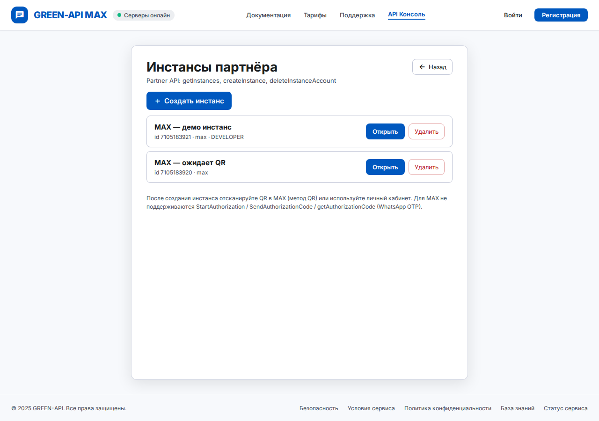
?demo=partner).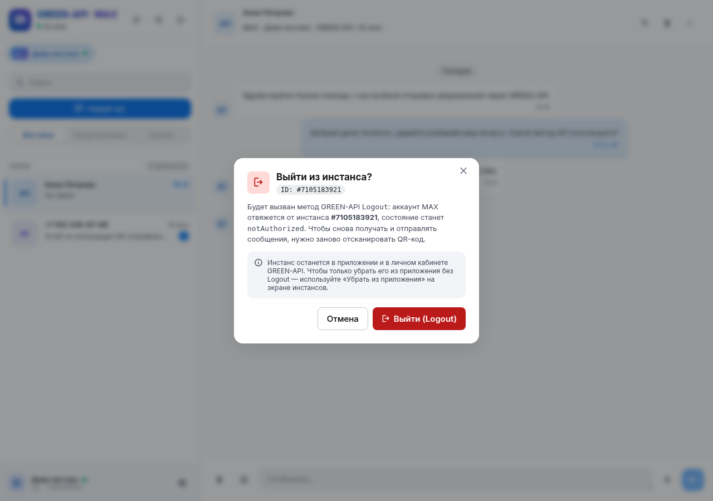
?demo=logout).7Создание чата, отправка и приём сообщений
- Нажмите «Новый чат» над списком чатов.
- Введите номер телефона (например,
79990000000) или готовый chatId и нажмите «Создать чат». Правила (src/api/chatId.ts):- строка с
@или начинающаяся с-— используется как chatId без изменений; - 5–9 цифр — числовой ID личного чата MAX;
- 10–15 цифр — номер телефона, превращается в
{цифры}@c.us.
- строка с
- Напишите текст и отправьте: Enter — отправка, Shift+Enter — новая строка. Используется
POST sendMessage; при ошибке сообщение помечается как неотправленное с кнопкой «Повторить». - Ответ собеседника из MAX появится в чате автоматически.
Как работает приём (src/hooks/useNotificationPolling.ts)
- После входа в фоне крутится цикл:
GET receiveNotificationс таймаутом 5 с (long polling). - Если уведомление —
incomingMessageReceivedсtypeMessage = textMessage, текст добавляется в чат с совпадающим chatId (79990000000@c.usи79990000000считаются одним чатом). - Любое полученное уведомление (включая прочие типы) подтверждается
DELETE deleteNotification/{receiptId}, чтобы очередь не застревала. - При ошибке опроса показывается баннер и через 3 с выполняется повтор.
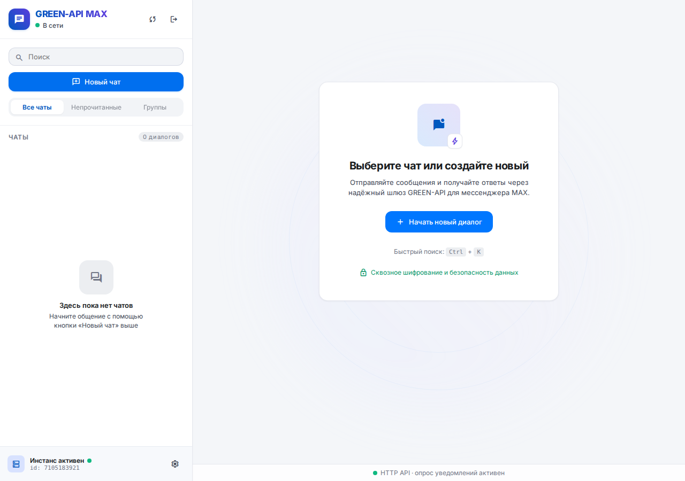
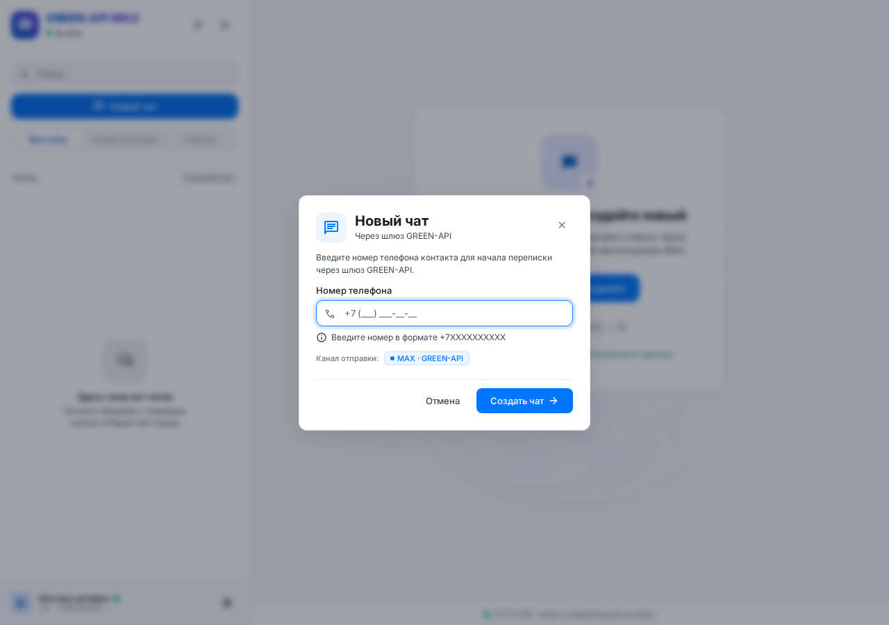
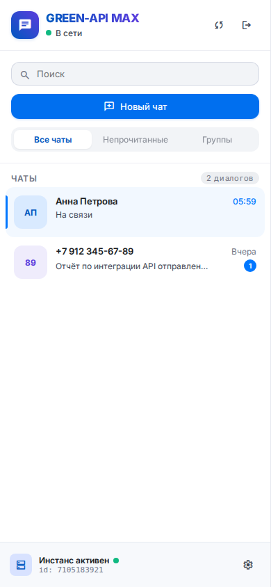
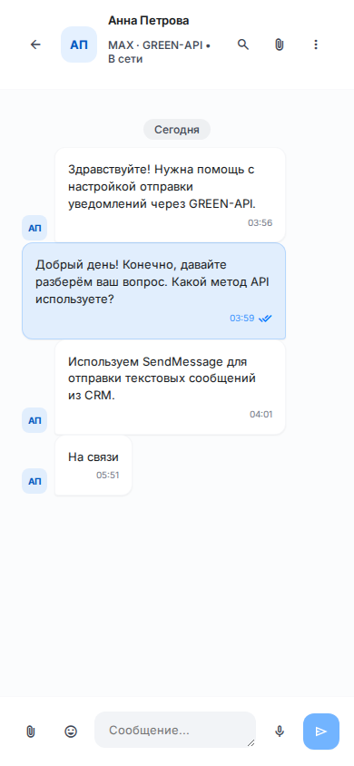
8Ошибки и состояния
| Ситуация | Что видно в приложении | Что делать |
|---|---|---|
| Неверные ключи (HTTP 401/403) | Баннер «Неверный idInstance или apiTokenInstance…» и подсветка обоих полей | Сверьте ключи в консоли; при необходимости перевыпустите токен |
Инстанс не авторизован (stateInstance ≠ authorized) | Карточка «Инстанс не авторизован в MAX» с шагами и кнопкой «Проверить снова» | Отсканируйте QR (шаг 3), перезагрузите инстанс в консоли |
Сеть / CORS (Failed to fetch) | Баннер «Ошибка сети / CORS…» с обратным отсчётом повтора; сообщение с «Повторить» | Используйте dev-прокси или Docker, проверьте apiUrl |
| Загрузка | Скелетоны списка и переписки, статус «отправляется» | — |
| Неверный partnerToken (401) | Баннер «Неверный partnerToken…» | Запросите ключ у support@green-api.com |
?demo=error).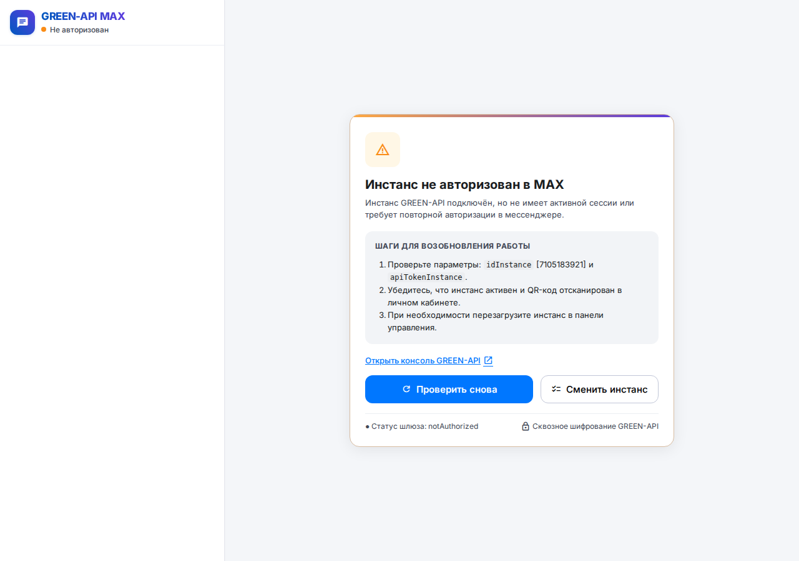
?demo=unauthorized).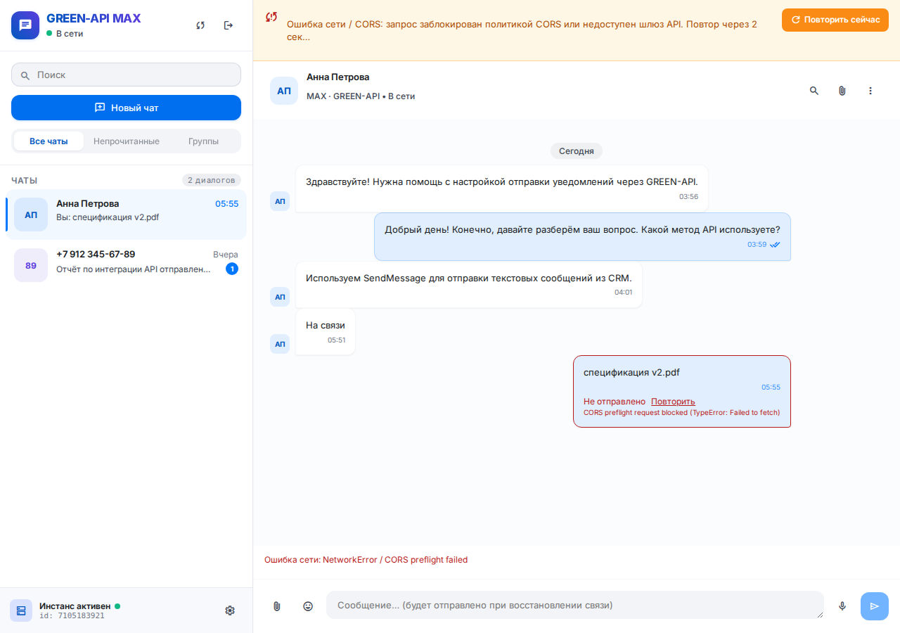
?demo=network).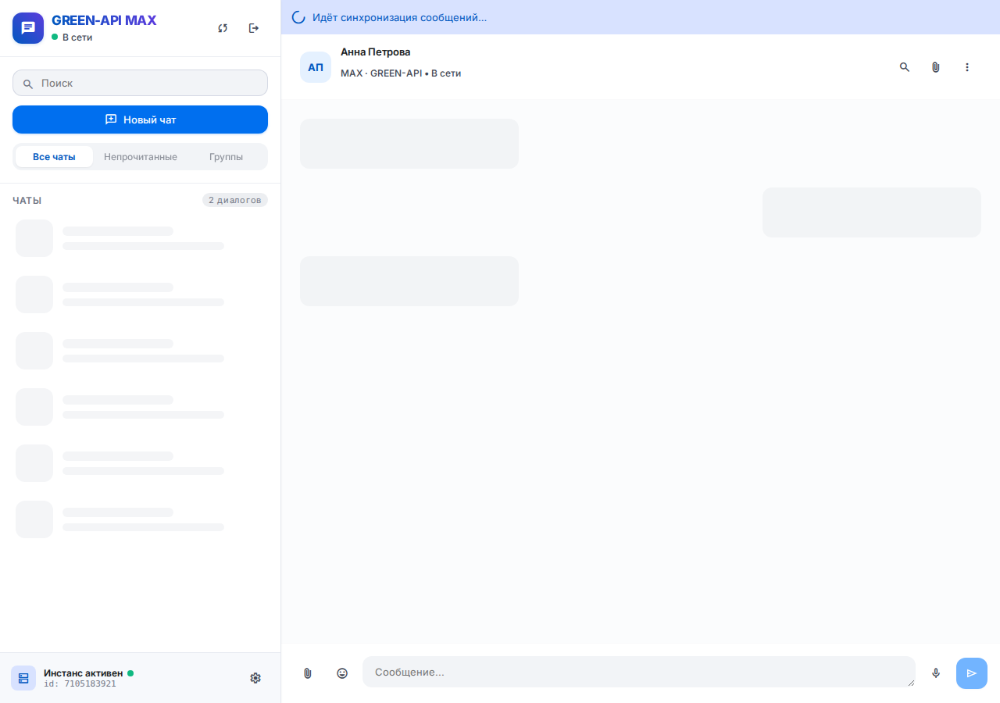
?demo=loading).9Тесты
Unit-тесты (Vitest + jsdom)
npm test # vitest run
npm run test:watch
npm run lint # ESLint
npm run build # tsc -b && vite buildПокрыт API-слой: greenApi, notifications, chatId, errorMapping, devProxy, qrAuth, instanceState, instanceAuthPolling, partnerApi, а также автозаполнение формы входа.
E2E (Cypress)
| Spec | Тип | Что проверяет |
|---|---|---|
03-partner-register-demo | демо, без секретов | Маршруты ?demo=register, partner, instance-qr |
01-api-credentials | live | getStateInstance через dev-прокси |
02-instance-login-auth | live | Вход в UI → экран QR или чат |
04-instance-qr-live | live | Получение QR через прокси |
05-live-send-receive | live | SendMessage (API + UI), receive/delete, опционально входящее в UI |
- Скопируйте
cypress.env.example.json→cypress.env.json(файл в.gitignore, не коммитится):{ "idInstance": "1101000001", "apiTokenInstance": "YOUR_API_TOKEN", "apiUrl": "https://1101.api.green-api.com", "apiUrlDirect": "https://1101.api.green-api.com", "chatId": "79990000000", "incomingMarker": "", "requireIncoming": false } - Запустите
npm run test:e2e— поднимется Vite на порту43128и прогонятся все specs. Еслиcypress.env.jsonнет, скриптscripts/ensure-cypress-env.mjsсоздаст его из примера. Интерактивно:npm run cy:open. - Для
05нуженchatIdи авторизованный инстанс. Чтобы проверить входящее в UI, во время прогона (~2 мин) отправьте из MAX на инстанс текстe2e-in-…из лога Cypress, либо задайтеincomingMarkerиrequireIncoming: true.
Секреты для CI
В Settings → Secrets and variables → Actions репозитория: GREEN_API_ID_INSTANCE, GREEN_API_TOKEN, GREEN_API_URL, опционально GREEN_API_CHAT_ID. Workflow сам собирает из них cypress.env.json. Без первых трёх live-specs пропускаются.
10CI/CD (GitHub Actions)
.github/workflows/ci.yml — push и PR в main
- quality: Node 20,
npm ci→npm run lint→npm test→npm run build→docker build. - cypress-demo (после quality): Cypress
03-partner-register-demoна dev-сервере, без секретов. - cypress-live (после quality): если заданы
GREEN_API_ID_INSTANCE,GREEN_API_TOKEN,GREEN_API_URL— пишетcypress.env.jsonи гоняет specs 01, 02, 04, 05; иначе шаг пропускается с сообщением в логе.
.github/workflows/deploy.yml — push в main, теги v*.*.*, ручной запуск
- build-image: собирает Docker-образ (с
VITE_GREEN_API_SAME_ORIGIN_PROXY=true) и пушит в GHCRghcr.io/<owner>/<repo>с тегами ветки, semver и sha. Пример:docker pull ghcr.io/aistocksearch/green-api-max-chat:main.
.github/workflows/deploy-pages.yml — push в main, ручной запуск
- build:
GITHUB_PAGES=true npm run build(Vite base/green-api-max-chat/), в артефакт добавляютсяguide.html,screenshots/*.pngи404.html(SPA fallback). - deploy: публикация на GitHub Pages: демо-приложение и это руководство. Прокси нет, поэтому live-запросы к GREEN-API из браузера могут блокироваться CORS — Pages предназначен для демо-режима и документации.
11Troubleshooting / FAQ
«Неверный idInstance или apiTokenInstance», хотя ключи верные
Проверьте, что нет пробелов, и что API URL соответствует карточке инстанса (например, https://1101.api.green-api.com). Если токен перевыпускали — используйте новый.
«Ошибка сети / CORS: … Failed to fetch»
Запускайте через npm run dev (прокси Vite) или Docker (nginx). Статический хостинг без прокси упирается в CORS. Также проверьте, что хост apiUrl входит в allowlist (*.api.green-api.com, *.api.greenapi.com).
Сообщения отправляются, но ответы не приходят
В настройках инстанса очистите webhookUrl и включите уведомления о входящих сообщениях. Закройте другие вкладки приложения — несколько опросов одной очереди конфликтуют. Отображаются только текстовые сообщения.
Ответ пришёл, но в другом/новом чате не виден
Входящее показывается в чате с совпадающим chatId. Для MAX собеседник может прийти с числовым ID — создайте чат с этим ID.
Экран QR не исчезает
Сканируйте код в мобильном приложении MAX; QR обновляется каждые 5 с — используйте актуальный. Если требуется пароль 2FA — введите его. При blocked — разберитесь с аккаунтом MAX; при необходимости перезагрузите инстанс в консоли.
Developer-инстанс ведёт себя ограниченно
Бесплатный тариф имеет лимиты. Для полноценной проверки используйте платный инстанс или учитывайте ограничения.
Live Cypress пропущен в CI
Не заданы секреты GREEN_API_ID_INSTANCE, GREEN_API_TOKEN, GREEN_API_URL. Это нормально: демо-spec и остальные проверки выполняются.
npm ci ругается на engines / не стартует Cypress
Обновите Node до 22 LTS (Vitest 5 и Cypress 16 заявляют Node 22+).
Порт 43123 / 43128 / 8080 занят
Dev: npm run dev -- --port 5173. Docker: измените маппинг, например -p 8081:8080.
Как переснять скриншоты?
npm run screenshots (сборка + scripts/capture-screenshots.mjs, Playwright, демо-данные).